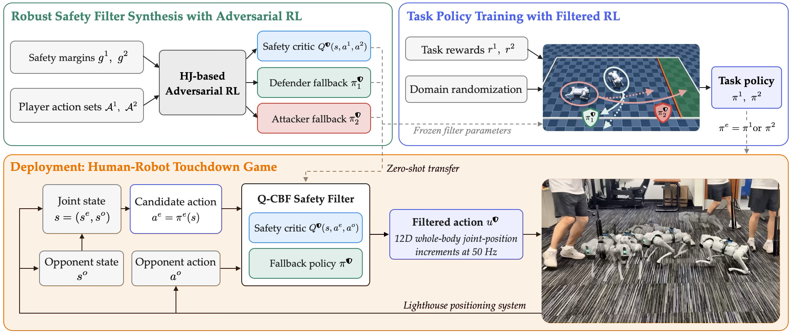
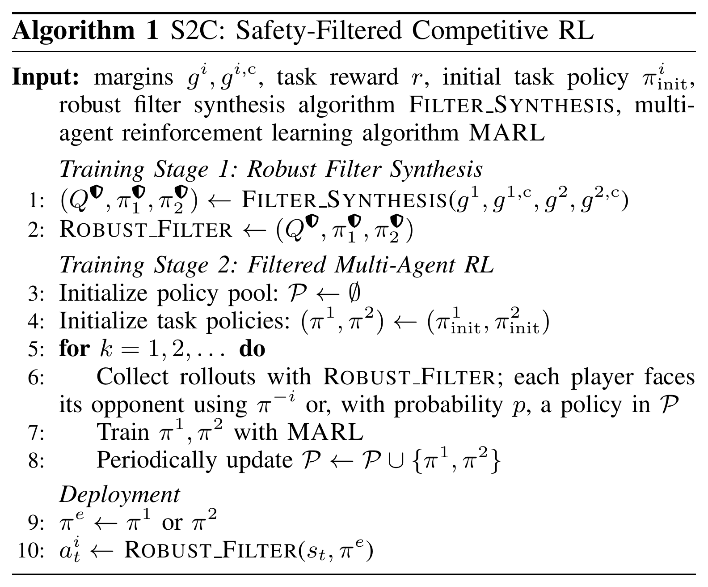
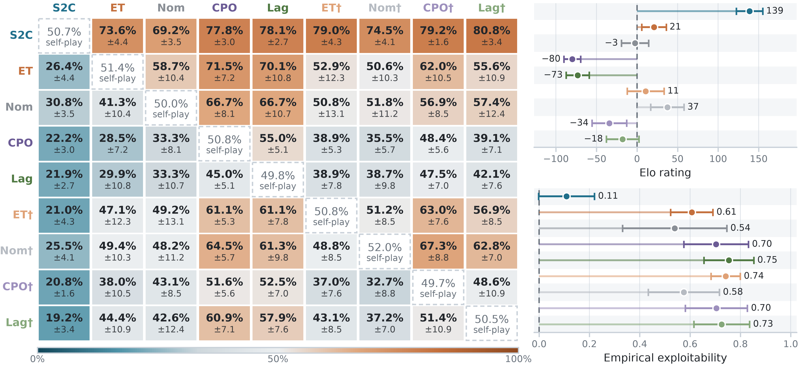

Symmetric game
S2C vs. Nom
Both robots race for the touchdown line on the opponent’s side. S2C starts on the left and gets there first in both rounds.
Robots deployed for competitive tasks must outmaneuver their opponents without sacrificing safety. Existing approaches, including safe reinforcement learning (RL), train a single policy to achieve task success and avoid failures simultaneously. This coupling can complicate training and leave the learned policy exploitable by deliberate attacks. We propose Safety to Competence (S2C), a two-stage RL framework that separates safety synthesis from competitive task learning. We formulate competitive robot interactions as safety-critical Markov games and prove that perfect filtering preserves policy non-exploitability when all players commit to safe maneuvers. S2C learns a robust safety filter via adversarial RL, embeds it in the environment during task policy training, and retains the same filter at deployment. In simulated quadruped touchdown games, S2C outperforms four safe RL baselines and their filtered variants, achieving the highest win rate and Elo rating, and the lowest empirical exploitability. Hardware stress tests against a human opponent confirm S2C’s competence.

Overview of the S2C training and deployment pipeline, illustrated with the asymmetric touchdown game.


Each cell corresponds to 3900 trials. S2C outperforms all baselines, achieving the highest Elo rating and lowest empirical exploitability. Left: round-robin win-rate matrix; each cell reports the row method’s win rate against the column method, averaged over all pairs of training seeds. Top right: Elo ratings computed jointly from all matches (higher is better). Bottom right: empirical exploitability, the net win rate of the strongest evaluated opponent, averaged across seeds (lower is better). † marks baselines deployed with the S2C safety filter.
The attacker starts on the left and must reach the green touchdown region before timeout; the defender wins by holding the line until time runs out. A robot loses immediately if it falls, leaves the field, or initiates a collision. Here both robots run S2C: the three rounds end in a timeout, a touchdown, and another timeout.
Simulation clips play at 1× and slow down at the end of each round.
Both robots race for the touchdown line on the opponent’s side. S2C starts on the left and gets there first in both rounds.
S2C dodges the defender and reaches the touchdown region.
S2C successfully defends against the opponent’s attack. In both rounds, ET initiates a collision and loses.
We deploy the policies on a Unitree Go2 in the asymmetric game against a human opponent, who moves a tracked surrogate representing the opposing robot. The human’s strategies were never seen during training. Top: S2C as attacker and as defender. Bottom: safe RL baselines fail under competitive human strategies.
S2C feints past the human and reaches the touchdown line.
S2C tracks the human’s rapid direction changes and holds the line until timeout.
ET exits the field while turning.
CPO initiates a collision with the human.
@article{s2c2026,
title = {Turning Safety into Competence: Minimally Exploitable Robot Policies via Safety-Filtered Reinforcement Learning},
author = {TODO},
journal = {arXiv preprint arXiv:TODO},
year = {2026}
}